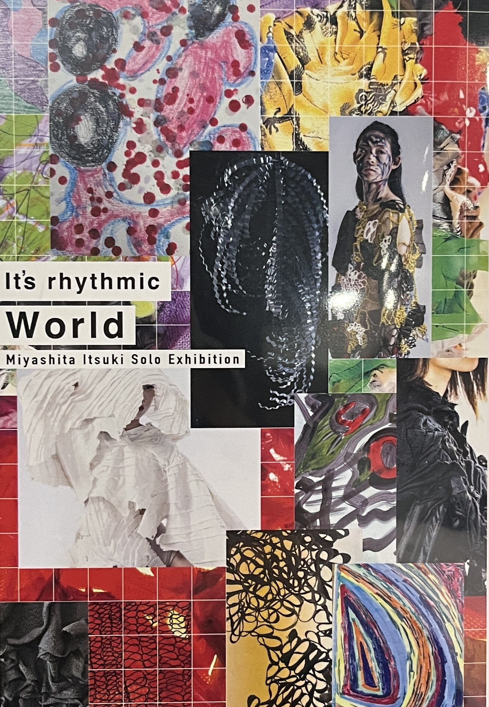
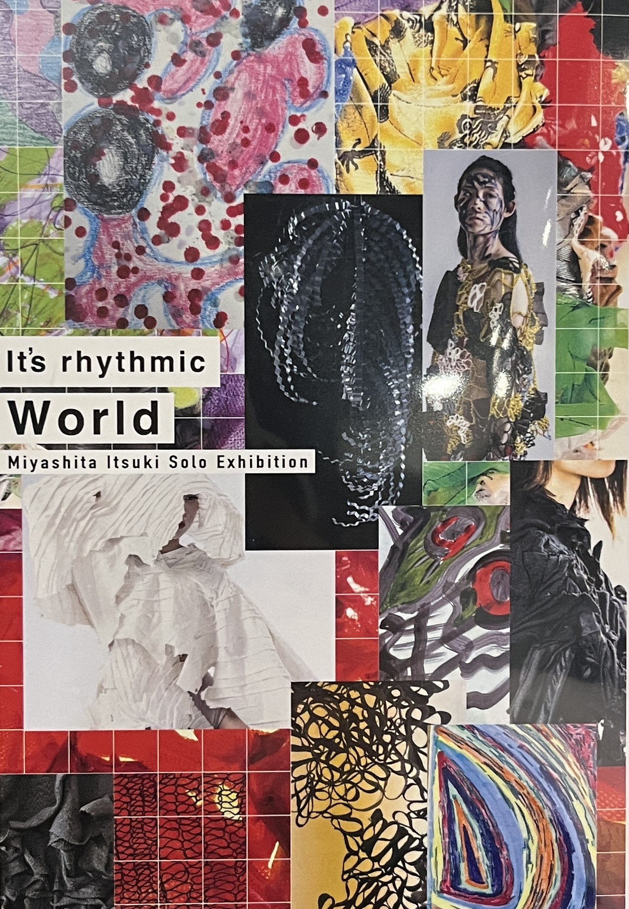

Re:Flyers
ブリコラージュとは、身近にある素材や、偶然手にしたものたちを組み合わせ、そこに新たな意味を生み出す行為だと捉えている。
既製のもの、与えられたものだけで完結するのではなく、環境や状況の中に潜む断片を拾い集め、自らの手で新しい「何か」に変えていく。その中には、無意識に置き去りにされた記憶や、時間の中で役割を終えたモノたちも含まれている。
今回、私は「Re:Flyers」の制作を通して、ブリコラージュを考えた。
街に溢れるフライヤーは、それぞれのイベントの色や雰囲気、想いを一度きりで運び、役目を終えた瞬間にただの過去の痕跡になる。でもそのデザインには確かに誰かの情熱が込められていて、そのまま消費されていくことについて考えた。
私は、そうしたフライヤーたちの断片を集め、グリッド状に配置し、インターネット上に再構築する。無数の記憶のかけらが、また新しい風景を立ち上げていくような感覚。過去をなぞるのではなく、断片たちが別のかたちで呼吸を始める。
私にとってブリコラージュとは、「過去に一度だけ現れた想いを、別のかたちで未来に引き継ぐこと」だ。
ただ集めるのでも、ただ保存するのでもない。手を加えることで、かつてそこに宿っていた熱をもう一度生き返らせ、違う物語へとつなげていくこと。
だからブリコラージュは、単なる再利用ではない。記憶に対する、新しいアプローチだと思っている。
 
